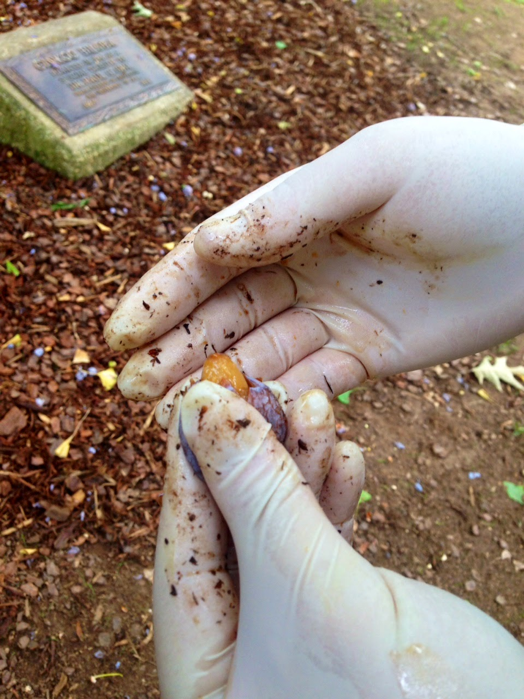

Trending! Forum Threads
Started by mikehike128
Replies: 14 | Last Post: 238 weeks ago
Started by ✔OakheavenParkOfficial
Replies: 8 | Last Post: 170 weeks ago
Started by ForestyFreak
Replies: 3 | Last Post: 198 weeks ago
Posts
theGreenWitch08
Posted on November 3, 2005
Finally managed to get my hands on some Hebeloma aminophilum! It only grows in very specific conditions and took ages to get. For more info go check out my blog :D
.jpg)
Commets (2) | 8 Views | 2 Likes 
[@KateyE!999]: I can't wait to use it. Thanks El!
[@Charles]: A man is missing and you're posting about mushrooms?
MtJames0180
Posted on October 28, 2005
!! Cancelling the weekly morning trek. Sorry guys. It's weird to go in after what happened. I know Mike would want us to keep doing it but I just can't
Commets (7) | 34 Views | 6 Likes 
NatureLover88
Posted on October 25, 2005
Switching to the Barobay ranges, the forest feels so off right now. Joining the S&R efforts though dw
Commets (1) | 34 Views | 6 Likes 
MtJames0180
Posted on October 19, 2005
Has anyone seen Mike Scott around? (@mikehike128) I haven't seen him in a while. I know he was planning to check out the new trail. Juts putting this out there in case someone does know him/seen him around
Commets (2) | 34 Views | 6 Likes 
[@Shoutbox]: His mum probably checked him into St.Vincents Psych finally after all his weird crashouts.
>>[mtJames0180]: Not cool man. Seriously though, has anyone actually seen him?
MountainHiker99
Posted on October 20, 2005
Saw this guy near trail 7. Any idea what it might be? Man I wish I brought my camera
Commets (3) | 34 Views | 2 Likes 
[@Shoutbox]: Yea. your mum (jk thats obvisouly just a cat)
MikeHike128
Posted on November 3, 2005
Accidentally stepped in a fairy circle, haha. I've never seen one so big before

Commets (2) | 8 Views | 2 Likes 
[@theGreenWitch08]: Lol the fairies are gonna steal your name or something!
MountainHiker99
Posted on October 16, 2005
GUYS how many signs do the Park ranger have to put up for ya'll to stop pooping near the trail!! Go into the forest to do you business. It fucking STINKS
This is on route 4, near the lake
Commets (1) | 34 Views | 22 Likes 
[@Shoutbox]: When you gotta go, you gotta go Ig lololol
Moonstone83
Posted on October 4, 2005
So glad there are so many herbs in the forest. The apothecary would've drilled holes in my wallet. Found a patch of Stinging Nettles and wild garlic on my walk!
Commets (2) | 34 Views | 2 Likes 
[@theGreenWitch08]: So true, it's so easy to grow what you need in here too!
theGreenWitch08
Posted on October 3, 2005
Oh My God, I can't believe I found Chanterelles in October! I thought they'd be out of season by now. The Samhain Potluck is gonna be so good!
Commets (0) | 34 Views | 9 Likes 
theGreenWitch08
Posted on September 20, 2005
Yellow wood-sorrel also has health and medicinal benefits, many of which are outlined on Harrison Murray's blog "Bushcraft." it should be eaten in moderation, though, because it's high in potassium oxalate and oxalic acid...
Commets (3) | 34 Views | 2 ikes 
Clancy39@1
Posted on August 28, 2005
Sad that I won't be able to be as active on Oakheaven once I leave for Uni. Gonna miss the treks and the rabbits.
Commets (3) | 34 Views | 2 Likes 
mikehike128
Posted on August 20, 2005
Can people stop yelling in the park! It's supposed to be peaceful ffs
Commets (3) | 34 Views | 2 Likes 
Moonstone83
Posted on August 20, 2005
Full Moon fest tonight! If you weren't invited please stay clear of the Great oak tonight guys <3
Commets (3) | 34 Views | 2 Likes 
mikehike128
Posted on June 4, 2005
The park rangers are useless, I swear this place needs more staff or something. The vandalism is getting out of hand.
Commets (3) | 34 Views | 2 Likes 
mikehike128
Posted on June 2, 2005
Is this site just people from Oakheaven high?
Commets (1) | 34 Views | 2 Likes 
[@Shoutbox]: Yea. It's mainly the nature club and a buncha randos most of the time....got some of those weirdos "witches" too.
>>[@Moonstone83] Rude! Good luck getting Algebra notes from someone else Theo.
theGreenWitch08
Posted on May 20, 2005
Gonna try making acorn bread! Acorns have long been a food source in indigenous populations, yet many people tend to avoid using them because preparing acorns....

Commets (1) | 34 Views | 2 Likes 
[@Moonstone83]: Can't wait to try it!
mikehike128
Posted on May 17, 2005
Found this cool block with Moss on the Moose rocks near the Carry Trail (6). I've never seen it before, I swear it's new.
Commets (1) | 34 Views | 2 Likes 
[@Shoutbox]: That's one of the old graves dude, its been there for ages. Don't touch it though
theGreenWitch08
Posted on April 20, 2005
Foraging for ginkgoes is a stinky business. To forage for ginkgoes, you should first put on latex gloves. The nuts are encased in the pulpy fruits, which can give you an allergic reaction...

Commets (0) | 34 Views | 2 Likes 
mikehike128
Posted on March 28, 2005
Anyone joinin the morning trek on sunday?
Commets (7) | 34 Views | 6 Likes 
 mtJames0180
mtJames0180
.gif)